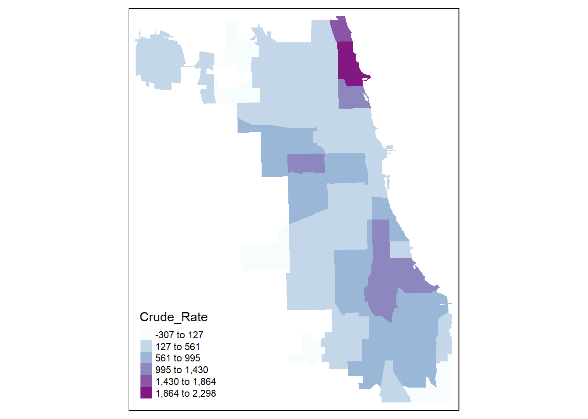
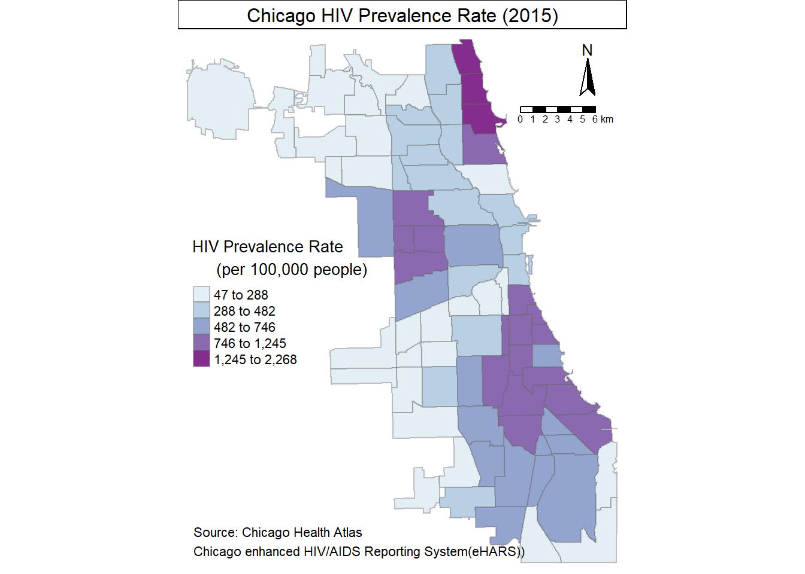

This project was one of three assignments from the “Introduction to GIS and Spatial Analysis for Social Scientists” course taught by Dr. Marynia Kolak. It was to design a map using data from Chicago Health Atlas. Among several health indicators, “HIV Prevalence Rate” was chosen for this project. While the HIV data was downloaded from Chicago Health Atlas, the shapefile of Chicago with community area boundaries was from the City of Chicago Data Portal. Originally, I used GeoDa for mapping, but as I found out that mapping with R could give me more fine-tuned maps, I decided to redo this project with R.
library(rgdal)## Loading required package: sp## rgdal: version: 1.3-4, (SVN revision 766)
## Geospatial Data Abstraction Library extensions to R successfully loaded
## Loaded GDAL runtime: GDAL 2.2.3, released 2017/11/20
## Path to GDAL shared files: C:/Users/yhth9/Documents/R/win-library/3.5/rgdal/gdal
## GDAL binary built with GEOS: TRUE
## Loaded PROJ.4 runtime: Rel. 4.9.3, 15 August 2016, [PJ_VERSION: 493]
## Path to PROJ.4 shared files: C:/Users/yhth9/Documents/R/win-library/3.5/rgdal/proj
## Linking to sp version: 1.3-1library(rgeos)## rgeos version: 0.3-28, (SVN revision 572)
## GEOS runtime version: 3.6.1-CAPI-1.10.1 r0
## Linking to sp version: 1.3-1
## Polygon checking: TRUElibrary(tmap)
library(leaflet)
library(RColorBrewer)Census.Data <- read.csv("HIV_prevalence.csv")
head(Census.Data)## Category SubCategory Indicator Year Geography
## 1 Morbidity Infectious Disease HIV prevalence 2014 Community Area
## 2 Morbidity Infectious Disease HIV prevalence 2014 Community Area
## 3 Morbidity Infectious Disease HIV prevalence 2014 Community Area
## 4 Morbidity Infectious Disease HIV prevalence 2014 Community Area
## 5 Morbidity Infectious Disease HIV prevalence 2014 Community Area
## 6 Morbidity Infectious Disease HIV prevalence 2014 Community Area
## Geo_Group Geo_ID Number Crude_Rate Lower_95CI_Crude_Rate
## 1 1-Rogers Park 1 932 1694.8 1586.0
## 2 2-West Ridge 2 297 412.8 365.9
## 3 3-Uptown 3 1278 2267.5 2143.2
## 4 4-Lincoln Square 4 181 458.3 391.5
## 5 5-North Center 5 108 338.9 275.0
## 6 6-Lakeview 6 961 1018.4 954.0
## Upper_95CI_Crude_Rate Age_Adj_Rate Lower_95CI_Age_Adj_Rate
## 1 1803.6 NA NA
## 2 459.8 NA NA
## 3 2391.8 NA NA
## 4 525.1 NA NA
## 5 402.8 NA NA
## 6 1082.7 NA NA
## Upper_95CI_Age_Adj_Rate Percent Lower_95CI_Percent Upper_95CI_Percent
## 1 NA NA NA NA
## 2 NA NA NA NA
## 3 NA NA NA NA
## 4 NA NA NA NA
## 5 NA NA NA NA
## 6 NA NA NA NA
## Weight_Number Weight_Percent Lower_95CI_Weight_Percent
## 1 NA NA NA
## 2 NA NA NA
## 3 NA NA NA
## 4 NA NA NA
## 5 NA NA NA
## 6 NA NA NA
## Upper_95CI_Weight_Percent Map_Key Flag
## 1 NA Quintile G
## 2 NA Quintile G
## 3 NA Quintile G
## 4 NA Quintile G
## 5 NA Quintile G
## 6 NA Quintile GOutput.Areas <- readOGR("./Boundaries - Community Areas (current)", "geo_export_33b739f8-cd83-43f1-a0a4-17c16a5a9d46")## OGR data source with driver: ESRI Shapefile
## Source: "C:\Users\yhth9\Documents\2018.3 Summer\Intro to GIS\Assignment 1\Boundaries - Community Areas (current)", layer: "geo_export_33b739f8-cd83-43f1-a0a4-17c16a5a9d46"
## with 77 features
## It has 9 fieldshead(Output.Areas)## class : SpatialPolygonsDataFrame
## features : 6
## extent : -87.7069, -87.58001, 41.79448, 41.99076 (xmin, xmax, ymin, ymax)
## coord. ref. : +proj=longlat +ellps=WGS84 +no_defs
## variables : 9
## names : perimeter, community, shape_len, shape_area, area, comarea, area_numbe, area_num_1, comarea_id
## min values : 0, DOUGLAS, 19565.51, 16913961, 0, 0, 35, 35, 0
## max values : 0, OAKLAND, 36624.60, 71352328, 0, 0, 4, 4, 0By looking up the head part of both files, I noticed that the community area numbers were written in the “area_numbe” column in the shapefile and in the “Geo_ID” column in the HIV data. I merged these two data sets by using these column names.
ChiCommArea <- merge(Output.Areas, Census.Data, by.x="area_numbe", by.y="Geo_ID")
head(ChiCommArea)## class : SpatialPolygonsDataFrame
## features : 6
## extent : -87.7069, -87.58001, 41.79448, 41.99076 (xmin, xmax, ymin, ymax)
## coord. ref. : +proj=longlat +ellps=WGS84 +no_defs
## variables : 31
## names : area_numbe, perimeter, community, shape_len, shape_area, area, comarea, area_num_1, comarea_id, Category, SubCategory, Indicator, Year, Geography, Geo_Group, ...
## min values : 35, 0, DOUGLAS, 19565.51, 16913961, 0, 0, 35, 0, Morbidity, Infectious Disease, HIV prevalence, 2014, Community Area, 35-Douglas, ...
## max values : 4, 0, OAKLAND, 36624.60, 71352328, 0, 0, 4, 0, Morbidity, Infectious Disease, HIV prevalence, 2014, Community Area, 4-Lincoln Square, ...In this merged data set, the HIV prevalence rate was written in the “Crude_Rate” column. Before mapping, I checked if the data were numeric values or not.
str(ChiCommArea$Crude_Rate)## num [1:77] 932 828 904 1245 846 ...The raw data was actually factor-type values, but while doing this project initially through GeoDa, I had already converted the data into numeric values. If it had been the same as the raw data, I should have needed to use as.numeric(as.character()) code.
First, I Created a map for quick overview.
qtm(ChiCommArea, fill="Crude_Rate")## Linking to GEOS 3.6.1, GDAL 2.2.3, proj.4 4.9.3From this quick overview, I realized that the variables were concentrated in the lower two intervals. With curiosity about how the variables were naturally clustered, I created another map using natural breaks rather than quantile. I also wanted to change the palette to shape this map aesthetically better.
tm_shape(ChiCommArea) +
tm_fill("Crude_Rate", palette = "BuPu", style = "jenks")From the two maps above, I felt something special heppened in the northeastern side, so created another map with standard deviation.
tm_shape(ChiCommArea) +
tm_fill("Crude_Rate", palette = "BuPu", style = "sd")
While the standard deviation map clearly showed the outliers located in the northeastern side of Chicago, I chose the natural break map to see how those variables were geographically clustered as I could see twe clusters forming contours in addition to the cluster of outliers. (I used 6 bins for the assignment, but I find out that using 6 bins is better to distinguish regions by intervals.) Then, I changed the title of legend and added borders.
tm_shape(ChiCommArea) +
tm_fill("Crude_Rate", palette = "BuPu", style = "jenks", title = "HIV Prevalence Rate\n (per 100,000 people)") +
tm_borders(alpha = .4)Then, I added a title, a legend, a compass, a scale-bar, and a source credit to this map. This was the final map of HIV Prevalence Rate in the City of Chicago.
tm_shape(ChiCommArea) +
tm_fill("Crude_Rate", palette = "BuPu", style = "jenks", title = "HIV Prevalence Rate\n (per 100,000 people)") +
tm_borders(alpha = .4) +
tm_compass(position = c("right", "top")) +
tm_scale_bar(width = 0.15, position = c("right", "top")) +
tm_credits("Source: Chicago Health Atlas \nChicago enhanced HIV/AIDS Reporting System(eHARS))", align = "left", size = 0.7, position = c("left", "bottom")) +
tm_layout(
outer.margins = 0,
panel.show = TRUE,
panel.labels = "Chicago HIV Prevalence Rate (2015)",
panel.label.bg.color = "white",
legend.position = c("left", "center"),
frame = FALSE)